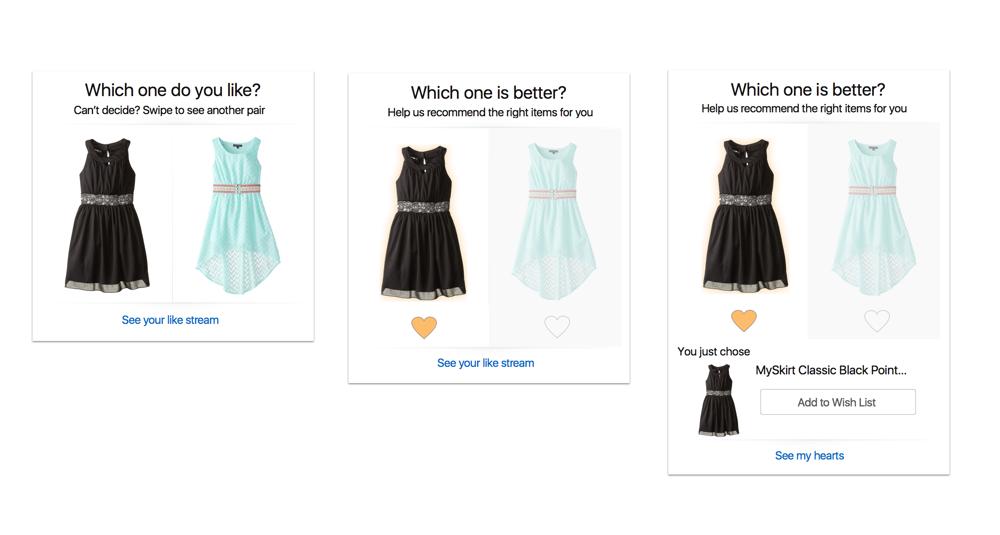

Mobile Card System Design
My Role: User Experience Designer, Visual Designer
Duration: 3 Months

My Role: User Experience Designer, Visual Designer
Duration: 3 Months
I helped design a card-based system for Amazon's mobile website to encourage customers to explore more Amazon services and products, make more engagements and spend more time on it.
I started by interviewing different stakeholders, including project managers, customers, and developers to see what should we put into the card system and what the structure of the system would be like, we came up with 3 keypoints in the end
The first step for us to build the card system is to standardize what the card of Amazon would be like, before we fill the concepts in. We started from some basic functions, like single item, multiple item, login, item of the day, etc. and finally concretized the model of the cards, there are several different templates of cards, but they all share the same information structure. Check the example to see the structure:
The comparison card is a typical example which goes through the whole design circle from brainstorming to user testing. The image below presents how the card evolutes from a abstract idea to a polished card, you can play with the prototype to see how it interact with the user.
Hundreds of different types of cards are generated during my internship, and in different stages. Six major catagories (time, location, social, events, status, and surroundings) are generated to match the card to the context of the users.
"You demonstrated an ability to Think Big and generate a large number of unique and interesting card concepts. You particularly impressed me with your ability to turn your ideas into scalable systems. A particularly abstract concept which you were able to componentize and organize into a simple framework."
—David Cole, Principle UX Lead, Amazon Homepage